3.2. Variant 2
Create an empty Simulink model:
>> open_system(new_system('untitled'))
or out of the Simulink start page:
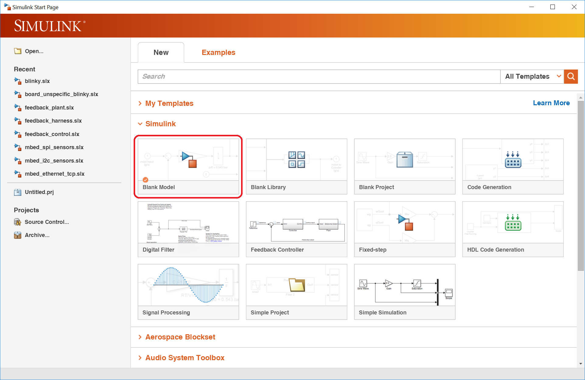{kind=link}
Open the model properties:
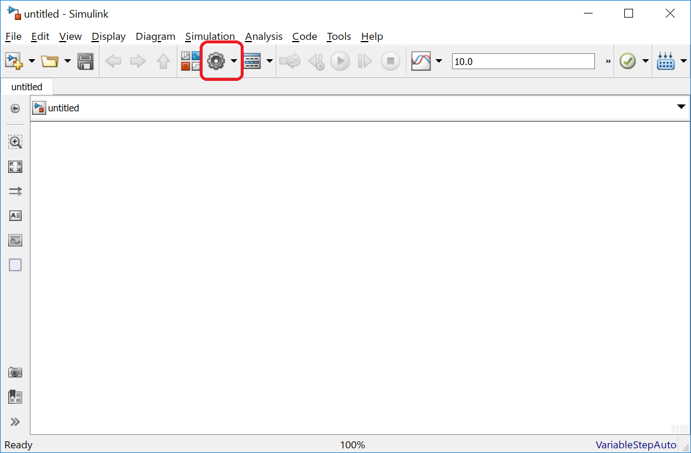{kind=link}
As solver options Fixed-step and discrete must to be chosen. The fixed-step size can be configured to 1ms. Other values are possible. The minimal value depends on the mbed target capabilities.
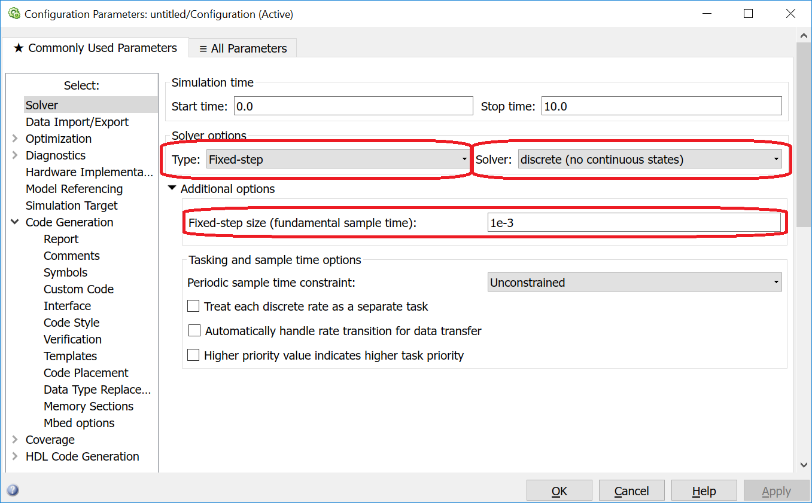{kind=link}
Under Code Generation the mbed.tlc has to be chosen:
 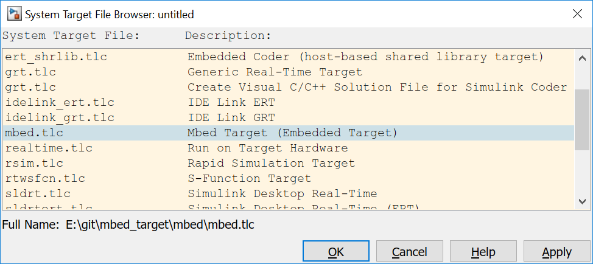
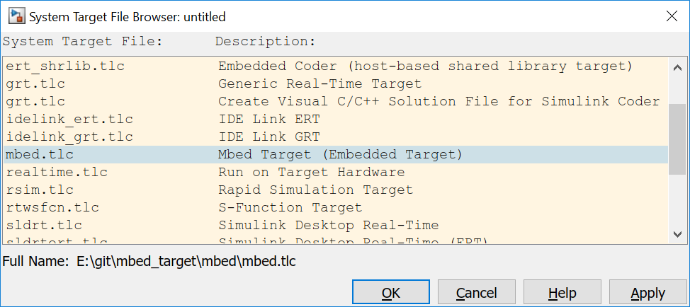
{kind=link}
To compile the generated C++ code, the check box Generate code only has to be switched of. Under the menu Mbed options the mbed_target specific options are available.
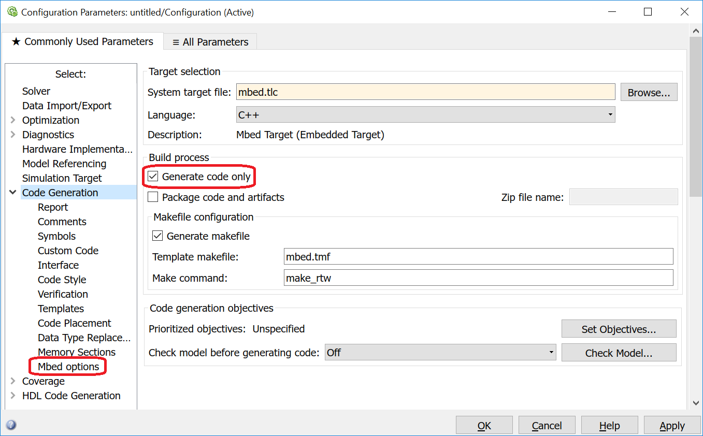{kind=link}
Please chose mbed-sos 5:
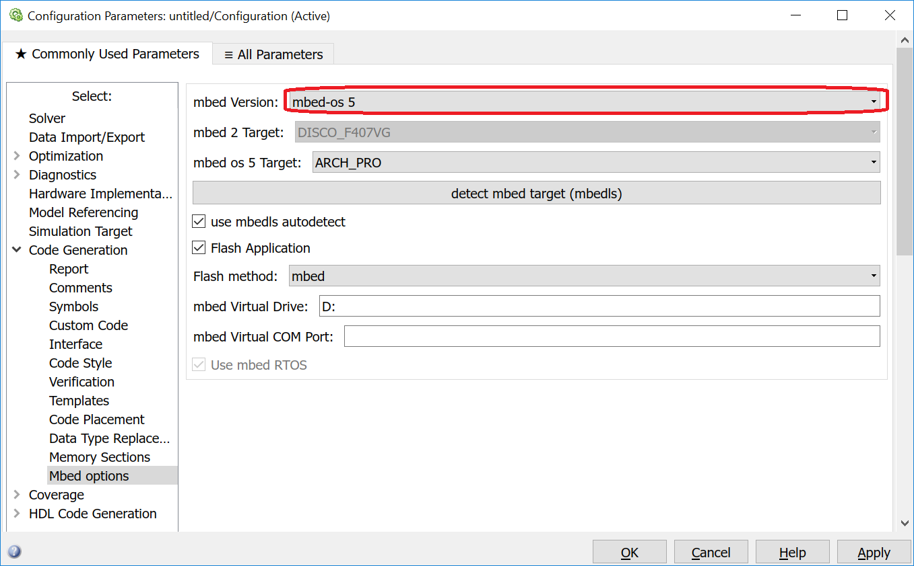{kind=link}
and check if the mbed board is correctly connected:
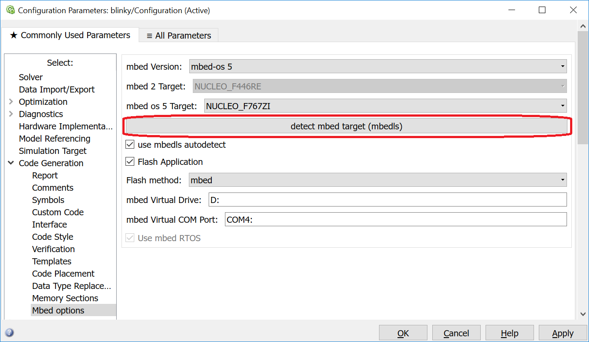{kind=link}
The result is identically to the step in the Variant 1.
To construct the model, one possibility is the usage of the library browser:
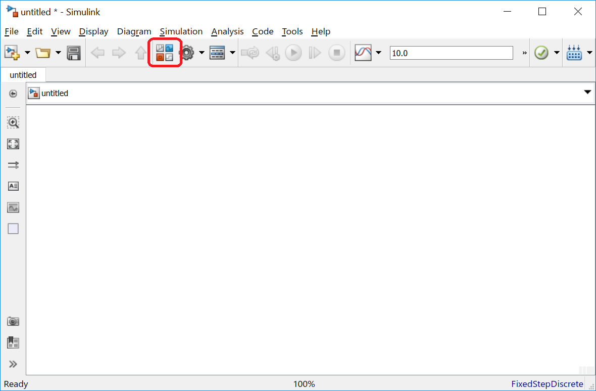{kind=link}
Simulink allows the usage of a huge amount of blocks for the code generation. But not every block can be used.
mbed_target delivers an own subtree in the Simulink library browser with the mbed_target specific blocks:
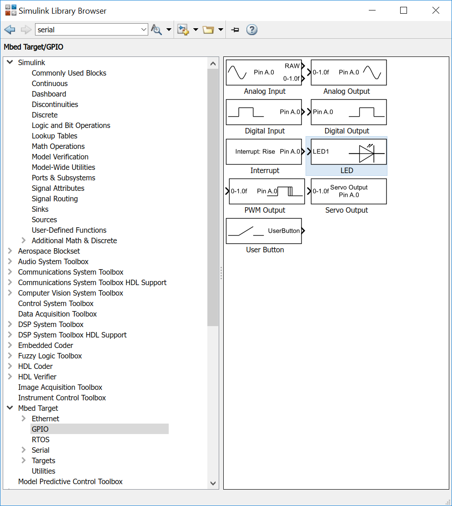{kind=link}
These blocks are described in this documentation. Alternatively the Simulink block help function can be used.
Please add the marked LED, Pulse Generator (with amplitude 1) and Data Type Conversion blocks:
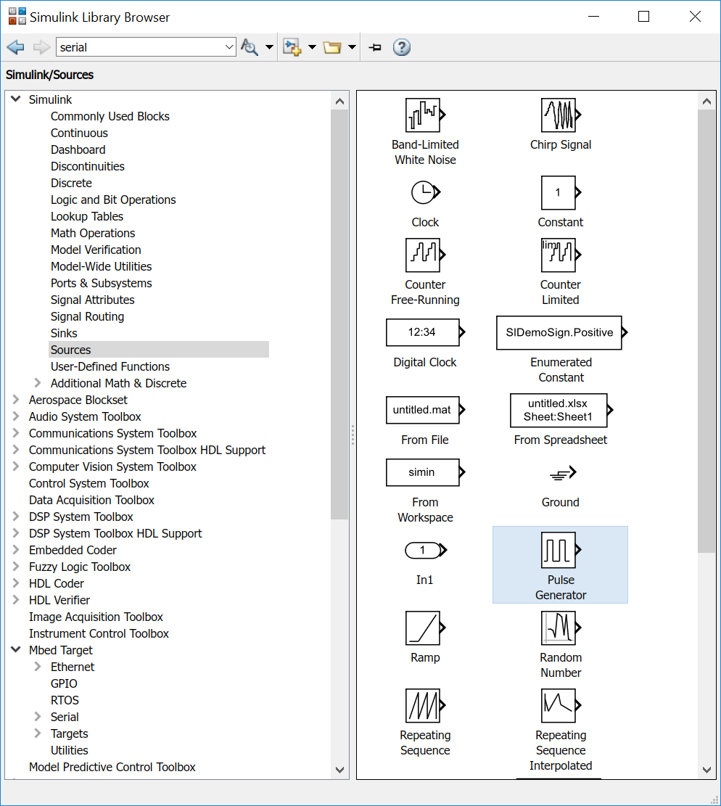 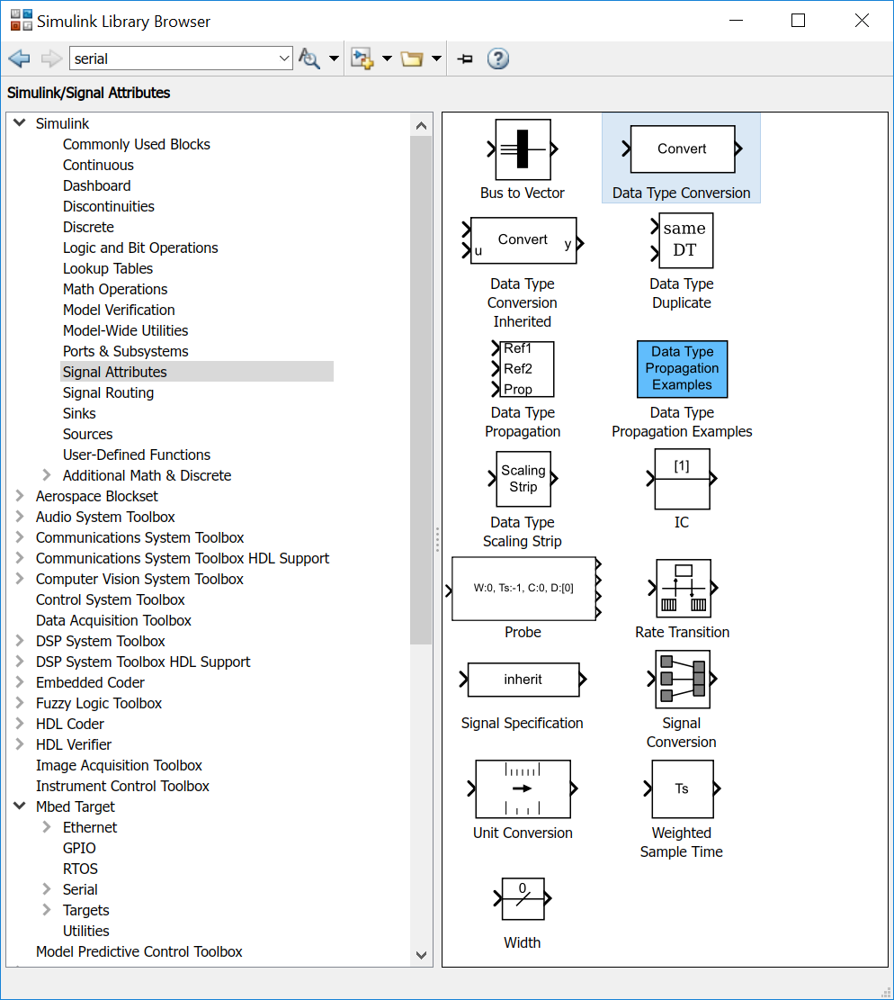{kind=link}
{kind=link}
After connecting the three blocks the model is identic to the model under Variant 1.
The model must be saved before the next step.
The code generation can be executed as already described there.